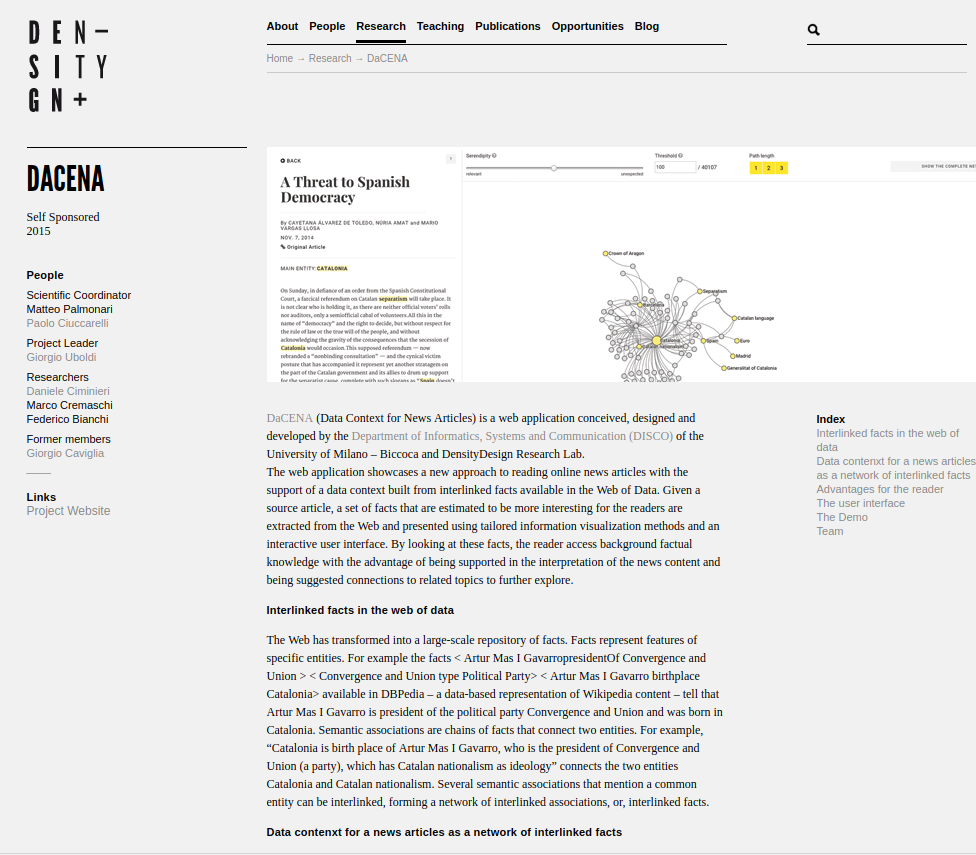

Knowledge Graph

People
-
Andrea Angiolillo
a.angiolillo@campus.unimib.it -
Omar Belingheri
o.belingheri@campus.unimib.it -
Adam Khayam
a.khayan@campus.unimib.it

Bernie Sanders has urged his supporters to look beyond the Democratic presidential nomination in a speech that stopped short of fully endorsing Hillary Clinton but made clear he was no longer actively challenging her candidacy. In an anticlimatic speech that signalled the effective end of a 14-month campaign odyssey, the Vermont senator insisted his “political revolution continues” despite Clinton’s effective victory in the delegate race. 'History made': Hillary Clinton claims Democratic nomination Read more But crucially, he implied he would soon be working with her campaign to help defeat Donald Trump. “The major political task that we face in the next five months is to make certain that Donald Trump is defeated and defeated badly,” Sanders told supporters in a live-stream video. “And I personally intend to begin my role in that process in a very short period of time.”
| N | Source | First Property | Middle one | Second Property | Destination | |
|---|---|---|---|---|---|---|
| 1 | Bernie_Sanders | R:associate | Patrick_Leahy | R:birthPlace | Vermont | 5 |
| 2 | Bernie_Sanders | L:successor | Jim_Jeffords | R:birthPlace | Vermont | 5 |
| 3 | Bernie_Sanders | L:associate | Patrick_Leahy | R:birthPlace | Vermont | 5 |
| 4 | Democratic_Party_(United_States) | L:party | George_W._Cate | R:birthPlace | Vermont | 4 |
| 5 | Democratic_Party_(United_States) | L:party | William_Sorrell | R:birthPlace | Vermont | 5 |
| 6 | Democratic_Party_(United_States) | L:party | Origen_D._Richardson | R:birthPlace | Vermont | 3 |
| 7 | Democratic_Party_(United_States) | L:party | Peter_Shumlin | R:birthPlace | Vermont | 5 |
| 8 | Democratic_Party_(United_States) | L:party | Timothy_Dwight_Hobart | R:birthPlace | Vermont | 5 |
| 9 | Democratic_Party_(United_States) | L:party | Azariah_C._Flagg | R:birthPlace | Vermont | 3 |
| 10 | Democratic_Party_(United_States) | L:party | Jewett_W._Adams | R:birthPlace | Vermont | 3 |